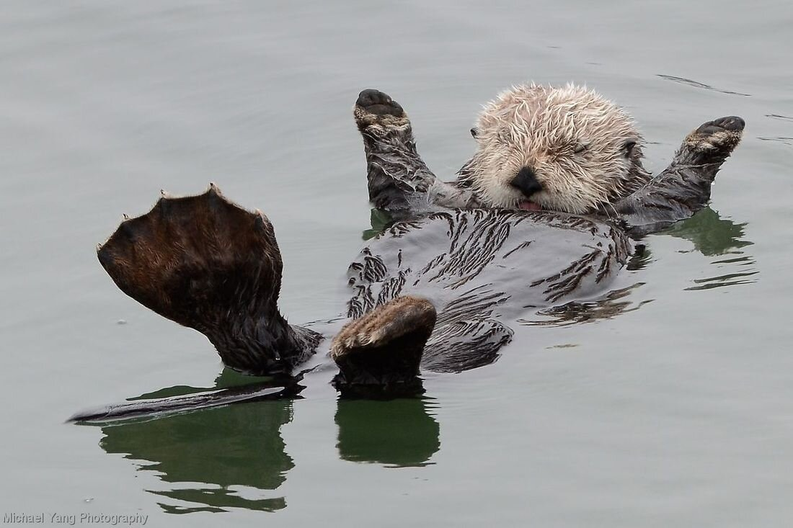
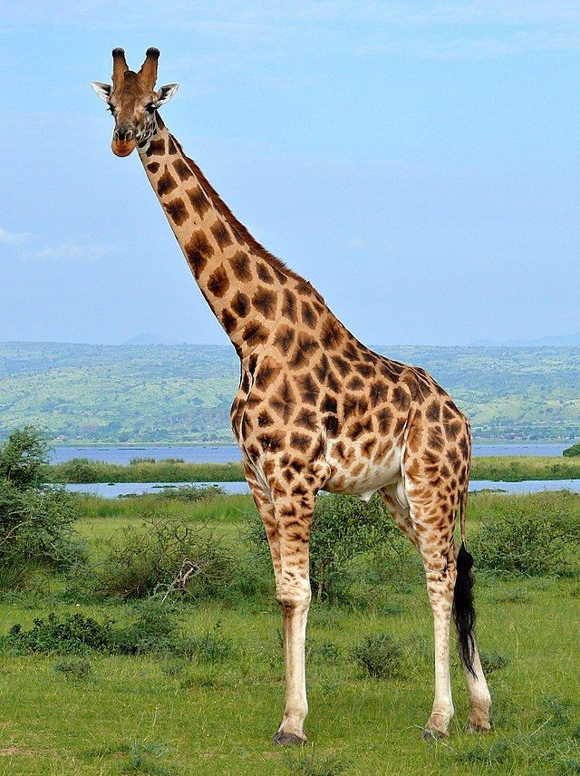
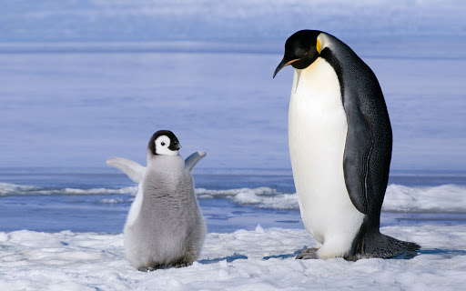

Традиционно выделяемая категория организмов, в настоящее время рассматриваемая в качестве биологического царства. Животные являются основным объектом изучения зоологии. Животные относятся к эукариотам. Классическими признаками животных считаются: гетеротрофность и способность активно передвигаться.

Кала́н (лат. Enhydra lutris, также морская вы́дра, камчатский бобр) — хищное морское млекопитающее; вид, входящий вместе с выдрами в семейство куньих. Использующееся изредка название «морской бобр» некорректно с точки зрения систематики, поскольку бобр относится к отряду грызунов, а калан — к отряду хищных.

Жира́ф (лат. Giraffa camelopardalis; от араб. زرافة зарафа) — парнокопытное млекопитающее из семейства жирафовых. Самое высокое наземное животное планеты. Самцы жирафа достигают высоты до 5,5—6,1 м (около 1/3 длины составляет шея) и весят до 900—1200 кг. Самки, как правило, немного меньше и легче.

Пингви́новые, или пингви́ны (лат. Spheniscidae) — семейство нелетающих морских птиц, единственное современное в отряде пингвинообра́зных (Sphenisciformes). В него включают 18 современных видов. Все представители этого семейства быстро плавают и ныряют.